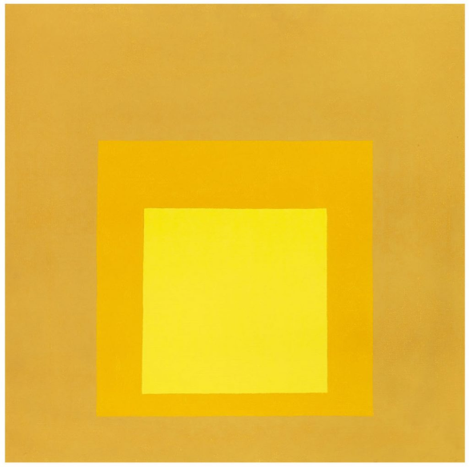

Josef Albers
Josef Albers (1888-1976) è stato un artista, designer e insegnante tedesco-americano, noto soprattutto per il suo lavoro nell'ambito dell'arte astratta e per il suo ruolo nella Bauhaus.
Nel 1920, Albers si unì alla Bauhaus, una scuola d'arte, design e architettura di grande influenza. Inizialmente, studiò arte e insegnò a Weimar, ma la scuola successivamente si trasferì a Dessau e infine a Berlino. Alla Bauhaus, Albers insegnò design di vetro e metallo e divenne direttore della divisione di design.
Lavori
La serie più celebre di Albers è senza dubbio "Omaggio al quadrato", in cui ha esplorato la percezione visiva attraverso la ripetizione di quadrati sovrapposti e il gioco di colori. Questa serie, sviluppata dal 1949 fino alla sua morte, riflette la sua dedizione allo studio sistematico del colore e delle relazioni spaziali.
Ogni dipinto presenta tre o quattro quadrati concentrici, ciascuno con colori diversi, e dimostra come la percezione del colore possa variare in base al contesto circostante.
